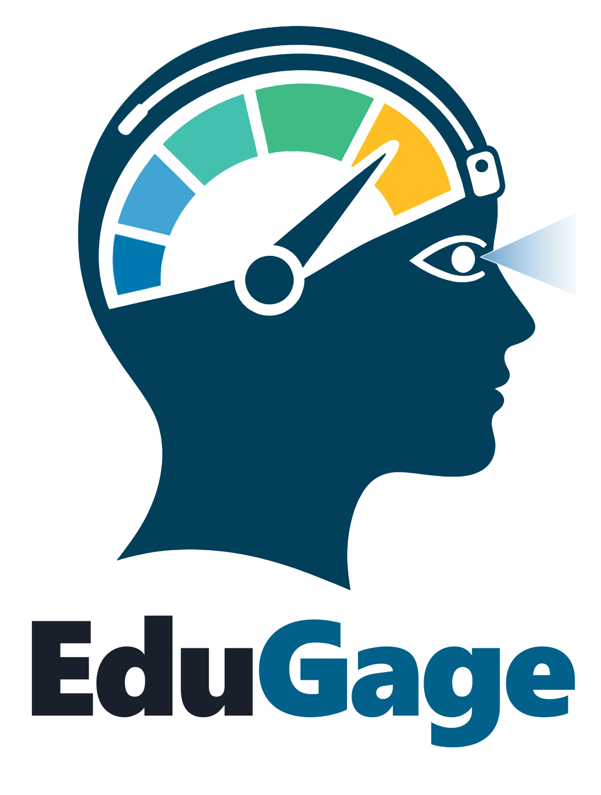
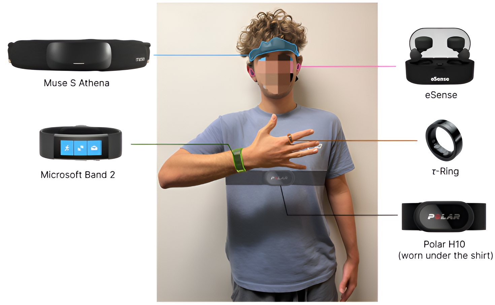
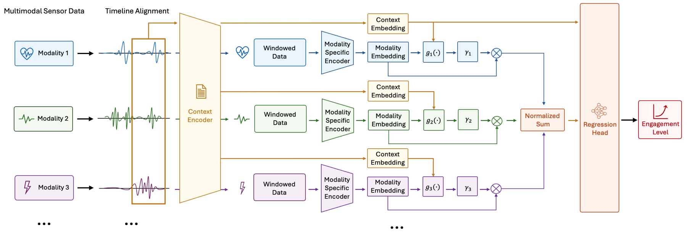

Watching a lecture video alone, nobody notices when your attention slips. EduGage asks whether wearables can. Sixteen students watched four short MIT lectures each while wearing six sensing devices. About once a minute the video paused and they rated how hard it had been to pay attention. We release every signal and every rating, and benchmark fifteen models on them.
Participants sat at a desktop workstation and wore everything at once. The devices range from a research-grade EEG headband to a smart ring, so we can ask which ones are actually worth wearing. Select a device to see what it records.

Engagement is not directly observable, so every label is the learner's own answer to that single question. Probes came about once a minute, placed at natural pauses in the lecture. Try it: press play, and answer when the video stops.
Press X instead for an external distraction; those probes are excluded from the labels. Higher numbers mean more difficulty, not more engagement.
Your ratings The study session (~90 min)Topics: X-rays, aerospace, environmental science and business, two MIT Open Learning videos each. Video order follows a Williams design, so order and A/B version are balanced across participants.
These are real, synchronised recordings from the public release. Each one is a single participant watching a single lecture, with every probe they answered marked on the timeline. Drag the playhead, or press play to watch gaze, brain rhythms, heart, skin and motion change between the ratings.
Each row is one participant, and each block is one lecture with its probes left to right. Most minutes were easy, but people differ a lot. Three learners never rated above 2, while others struggled through whole lectures. Not everyone uses the full scale, which is why the folds hold out groups of participants rather than single ones.
699 probe-aligned windows. For the binary metrics, 1–2 count as lower and 3–5 as higher attention difficulty.
Each dot is one lecture, averaged over participants. Gains come from five-question quizzes taken before and after the last two lectures. This is a sanity check on the probe, not a validation of it.
Every model predicts the rating from the 44 seconds of sensor data before the probe. Evaluation uses four folds of disjoint participants, so each model is always tested on people it has never seen. The reference model encodes each stream separately and learns, window by window, how much to trust it before fusing.

Mean ± SD over the four participant-grouped folds. The sensor-free baselines show how far the label distribution alone gets you. Predicting the mean rating already scores well on MAE and within-1 accuracy, which is why the binary macro-F1 matters.
We trained the model on all 2,047 non-empty combinations of the eleven streams. Below is the best combination at each size. More streams do not help monotonically. A chest ECG strap alone has the best binary macro-F1, and five streams give the best within-1 accuracy.
Each row's combination was selected independently, so adjacent rows don't measure the effect of adding or removing one stream.
Chest ECG beats wrist heart rate, head PPG and finger PPG. Fusing all four doesn't beat ECG alone.
From the same 44-second window, a one-minute forecast is about as good as estimating the current rating. Simply repeating the last rating is better still, so self-reports are strongly persistent.
Most engagement datasets use external raters or coarse labels, or leave out physiology. EduGage pairs in-situ self-reports at roughly one-minute resolution with wearable physiology, EEG and eye tracking, and it is openly available.
3.05 GB of raw device exports, one folder per participant, using cleaned public IDs. Also includes the quiz questions, de-identified quiz responses and the study materials.
P4/ 4_1_engagement_log.csv probes, ratings, video events 4_1_EEG.csv 4_1_PPG.csv Muse S Athena (EEG 256 Hz, PPG 64 Hz) 4_1_ACC.csv 4_1_GYRO.csv Muse IMU (52 Hz) 4_1_Polar_ECG.csv Polar H10 ECG (130 Hz) 4_1_msband_gsr.csv Microsoft Band 2 EDA (5 Hz) 4_1_msband_hr.csv Microsoft Band 2 HR (2 Hz) 4_1_eSense.csv eSense earable IMU (50 Hz) 4_1_T-Ring_…_7.bin τ-Ring PPG / IMU / temp (25 Hz) 4_1_BeamEyeTracker.csv webcam eye tracking (30 Hz) 4_1_MARKERS.csv synchronisation markersOpen on Figshare
Data discovery, timestamp repair, probe-aligned windows, the fixed participant folds, all baselines and the modality-aware model. The data-collection apps are included too.
git clone https://github.com/ZikangLeng/EduGage cd EduGage && pip install -r requirements.txt # put the Figshare participant folders under data/ python scripts/run_pipeline.py --stage data python scripts/run_pipeline.py --stage labels python scripts/run_pipeline.py --stage preprocessed_dataView on GitHub
@article{leng2026edugage,
title = {EduGage: A Multimodal Dataset and Benchmark for Sensor-Based Momentary
Assessment of Engagement in Self-Guided Video Learning},
author = {Leng, Zikang and Eyal, Edan and Shi, Yingtian and He, Jiaman and
Liu, Yaqi and Pl{\"o}tz, Thomas},
journal = {Proceedings of the ACM on Interactive, Mobile, Wearable and Ubiquitous Technologies},
volume = {10},
number = {4},
articleno = {229},
year = {2026},
doi = {10.1145/3857993}
}